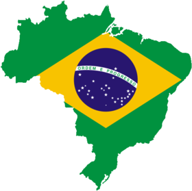
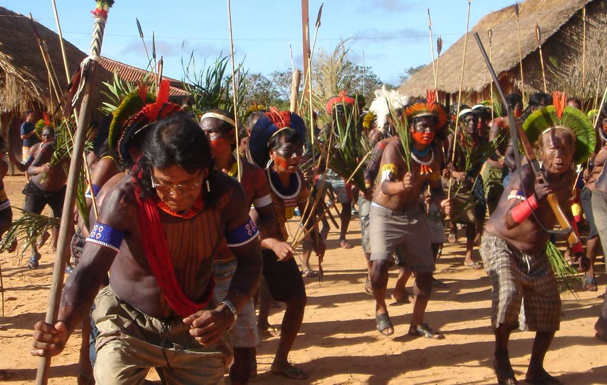

Brasil
Actualmente en Brasil viven alrededor de 305 tribus que suman un total de unas 900.000 personas, lo que equivale al 0,4% de la población brasileña.
El Gobierno ha reconocido 690 territorios para sus habitantes indígenas, que abarcan aproximadamente el 13% de la superficie del país. Casi toda esta reserva territorial (el 98,5%) se ubica en la Amazonia.
Pero, aunque aproximadamente la mitad de los indígenas de Brasil viven fuera de la Amazonia, estas tribus solo ocupan el 1,5% del total del territorio reservado para los indígenas en el país.

Actualmente existen unas 200 organizaciones indígenas que lideran la batalla por la defensa de los derechos que tanto les ha costado obtener. Cientos de indígenas salieron a las calles de Brasil el año pasado para protestar contra los planes del Gobierno de debilitar sus derechos. Muchos dirigen sus propios proyectos, clínicas sanitarias y escuelas bilingües. Los tikunas incluso han creado un museo para mostrar sus tecnologías, su arte, su cultura y su lengua a las personas blancas.
Algunas tribus han grabado vídeos con sus rituales y ceremonias para que las conozcan sus descendientes y para potenciar la comprensión de sus modos de vida. El Consejo Indígena de Roraima desarrolla proyectos para la cría de animales, la pesca y para preservar bancos de semillas para la diversidad genética que asegure la autosuficiencia de la tribu.
A pesar de estos logros, continúa existiendo un racismo endémico hacia los indígenas en Brasil. Ante la ley todavía son considerados menores de edad. El objetivo más importante para los pueblos indígenas y tribales de Brasil es el control sobre sus territorios: Brasil es uno de los dos únicos países de América del Sur que no reconoce el derecho territorial indígena
“Nosotros existimos. Quiero decirle al mundo que estamos vivos y que queremos ser respetados como pueblo.” (Marta Guaraní)